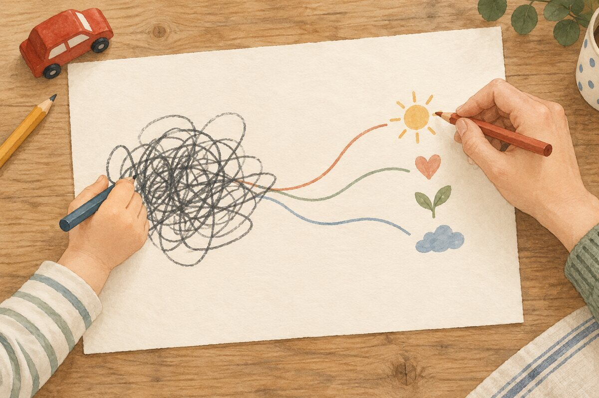

À lire maintenant
Nos articles

Émotions
Quand les mots ne viennent pas, écrivons-les
L’écriture peut devenir un pont entre le trop-plein émotionnel et la compréhension.
11 septembre 2026 · 4 min
Avant de corriger, commençons par écouter
Quand un enfant est bouleversé, il a souvent besoin que son émotion soit reconnue.
10 septembre 2026 · 4 min
Et si on disait moins « non » à nos enfants ?
Trois façons de poser une limite sans entrer dans le bras de fer.
8 septembre 2026 · 6 min